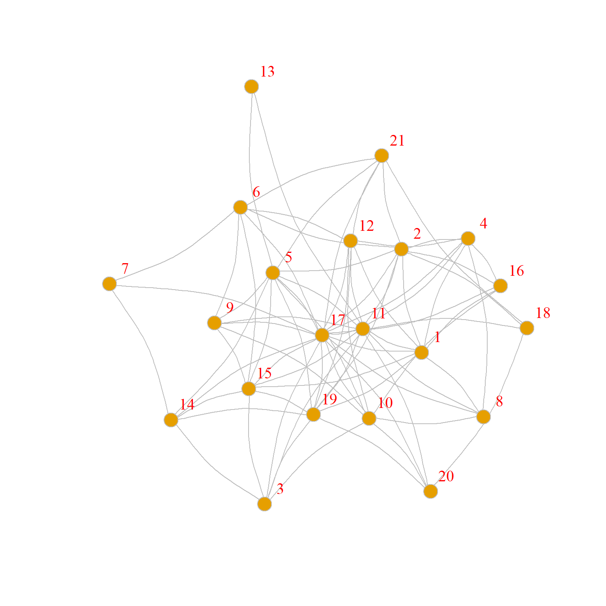
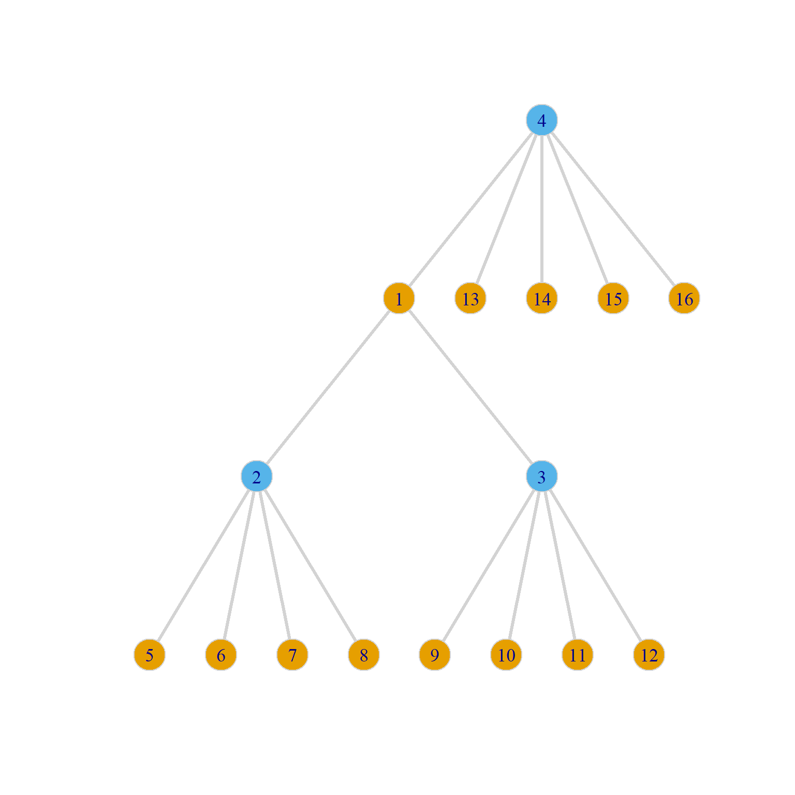

Status and Prestige
In the centrality lecture notes, we saw how to compute the most popular centrality measures (degree, closeness, and betweenness). Freeman’s “big three” have strong graph-theoretic foundation and do a good job of formalizing and quantifying the idea that a node is central if it is “well-placed” in the network, where being well-placed resolves into either being able to reach others (directly as with degree or indirectly as with closeness) or being able to intermediate between others (as with betweenness).
There is, however, another strong and well-motivated intuition as to what it means to be “well-placed” in a network. Here, the ties in the network are seen less as “pipes” that transmit stuff and more like “prisms” that reflect on you (Podolny 2001).
1 Networks as Prisms
One way to think about this second version of well-placedness is that what is transmitted through the network is the network itself, or more accurately, the importance, status, and prestige of the people you are connected to, preferably flowing from them (high status people) to you.
Under this interpretation, actors gain status and prestige within the network by being connected to high-status, prestigious others. Those others, in turn, get their status from being connected to high-status others, and so on ad infinitum.
One way to quantify this idea is as follows. If \(\mathbf{x}\) is a vector containing the desired status scores, then the status of actor \(i\) should be equal to:
\[ x_i = \sum_{j} a_{ij}x_j \tag{1}\]
Where \(a_{ij} = 1\) if \(i\) is adjacent to \(j\) in the network. Note that this formula just sums the status scores of all the others to whom each actor is connected.
In matrix notation, if \(\mathbf{x}\) is a column vector of status scores then:
\[ \mathbf{x} = \mathbf{A} \mathbf{x} \]
Because \(\mathbf{A}\) is an \(n \times n\) matrix and \(\mathbf{x}\) is \(n \times 1\) column vector, the (matrix) multiplication of \(\mathbf{A}\) times the vector \(\mathbf{x}\) will return another column vector of dimensions \(n \times 1\), in this case \(\mathbf{x}\) itself!
Note the problem that this formulation poses: \(\mathbf{x}\) appears on both sides of the equation, which means that in order to know the status of any one node, we would need to know the status of the others, but calculating the status of the others depends on knowing the status of the focal node, and so on. There’s a chicken-and-egg problem here.
Now, there is an obvious (to the math majors) mathematical solution to this problem, because there’s a class of solvable (under some mild conditions imposed on the matrix \(\mathbf{A}\)) linear algebra problems that take the form:
\[ \lambda\mathbf{x} = \mathbf{A} \mathbf{x} \tag{2}\]
Where \(\lambda\) is just a plain old number (a scalar). Once again conditional of the aforementioned mild conditions being met, we can iteratively search for a value \(\lambda\), fix it, then fill up the \(\mathbf{x}\) vector with another set of values, fix those, search for a new \(\lambda\), and continue until we have values of \(\lambda\) and \(\mathbf{x}\) that make the above equality true.
When we do that successfully, we say that the value of \(\lambda\) we hit upon is an eigenvalue of the matrix \(\mathbf{A}\) and the values of the vector \(\mathbf{x}\) we came up with are an eigenvector of the same matrix (technically, in the above equation, a right eigenvector).
Eigenvalues and eigenvectors, like Don Quixote and Sancho Panza, come in pairs, because you need a unique combination of both to solve the equation. Typically, a given matrix (like an adjacency matrix) will have multiple \(\lambda/\mathbf{x}\) pairs that will solve the equation. Together, the whole set \(\lambda/\mathbf{x}\) pairs that make Equation 2 true are the eigenvalues and eigenvectors of the matrix.
2 Eigenvalues, Eigenvectors, Oh My!
Note that all this obscure talk about eigenvalues and eigenvectors is just linear matrix algebra. It has nothing to do with networks and social structure.
In contrast, because the big three centrality measures have a direct foundation in graph theory, and graph theory is an isomorphic model of social structures (points map to actors/people and lines map to relations) the “math” we do with graph theory is directly meaningful as a model of networks (the counts of the number of edges incident to a node is the count of other actors they someone is directly connected to).
Eigenvalues and eigenvectors are not a model of social structure in the way graph theory is (their first scientific application was in Chemistry and Physics). They are just a mechanical math fix to a circular equation problem.
This is why it’s a mistake to introduce network measures of status and prestige by jumping directly to the machinery of linear algebra (or worse, talk about the idea of eigenvector centrality, which means nothing to most people, and combines two obscure terms into one even more obscure compound term).
A better approach is to see if we can motivate the use of measures like the ones above using the simple model of the distribution of status and prestige we started with earlier. We will see that we can, and that doing that leads us back to solutions that are the mathematical equivalent of all the eigenvector stuff.
3 Distributing Status to Others
Let’s start with the simplest model of how people can infer their status from others’ status in a network. It is the simplest because it is based on degree.
Imagine everyone has the same “quantum” of status to begin with (this can be stored in a vector of length equal to the number of actors in the network). Then, at each step, people “send” the same amount of status to all their alters in the network. Then we repeat, with everyone sending the amount of status they now have after receiving it from others. We repeat this many times. At the end of each step, we compute people’s new status scores using Equation 1. We stop doing this once people’s status scores no longer change across iterations.
Let us see a real-life example at work.
We will use a dataset collected by David Krackhardt on the friendships among 21 managers at a high-tech company on the West Coast (see the description here). The data are reported as directed ties (\(i\) nominates \(j\) as a friend), but we will constrain ties to be undirected:
The undirected friendship network is shown in Figure 1.

We then extract the adjacency matrix corresponding to this network:
And here’s a simple custom function using a while loop that exemplifies the process of status distribution through the network we just talked about:
Code
status1 <- function(w) {
x <- rep(1, nrow(w)) # initial status vector set to all ones of length equal to the number of nodes
d <- 1 # initial delta
while (d > 1e-10) {
o.x <- x # old status scores
x <- w %*% o.x # new scores are a function of old scores and adjacency matrix
x <- x / norm(x, type = "E") # normalizing new status scores
d <- abs(sum(abs(x) - abs(o.x))) # delta between new and old scores
} # end while loop
return(as.vector(x))
}Lines 2 and 3 initialize various quantities, most importantly the initial status vector for each node to just a series of ones:
Then lines 4-9 implement a little looping algorithm of how status is distributed through the network, with the most important piece of code being line 6, where the current status scores for each node are just the sum of the status scores of its neighbors computed one iteration earlier:
\[ \mathbf{s}(t) = \mathbf{A}\mathbf{s}(t-1) \]
Where \(\mathbf{s}\) is the vector of status scores and \(\mathbf{A}\) is the network’s adjacency matrix.
The program stops when the difference between the old and the new scores is negligible (\(|\sum_i\left(|s(t)_i| - |s(t-1)_i|\right)| < 10^{-10}\)) as checked in line 8.
Note the normalization step on line 7, where we divide each status score by a normalized sum of all of the scores. This is required in order to prevent the sum of status scores from getting bigger and bigger indefinitely (in mathese, this is referred to as the sum “diverging”).
In base R, the type = "E" normalization implements the Euclidean vector norm (also sometimes confusingly called the Frobenius norm implemented in R using type = F), by which we divide each value of the status scores by after each update:
\[ \mathbf{s}(t) = \frac{\mathbf{s}(t)}{||\mathbf{s}(t)||_2} = \frac{\mathbf{s}(t)}{\sqrt{\sum_i s_i^2}} \]
This means dividing each status score in the vector by the square root of the sum of the squared scores.
And here’s the resulting (row) vector of status scores for each node:
[1] 0.619 0.635 0.446 0.489 0.629 0.430 0.205 0.380 0.444 0.468 0.814 0.549
[13] 0.162 0.401 0.613 0.360 1.000 0.247 0.680 0.360 0.392What if I told you that this vector is the same as that given by the leading (first) eigenvector of the adjacency matrix?
Code
[1] 0.619 0.635 0.446 0.489 0.629 0.430 0.205 0.380 0.444 0.468 0.814 0.549
[13] 0.162 0.401 0.613 0.360 1.000 0.247 0.680 0.360 0.392Which is, of course, what is computed by the eigen_centrality function in igraph:
[1] 0.619 0.635 0.446 0.489 0.629 0.430 0.205 0.380 0.444 0.468 0.814 0.549
[13] 0.162 0.401 0.613 0.360 1.000 0.247 0.680 0.360 0.392So, the “eigenvector centralities” (Bonacich 1972) are just the limit scores produced by the status distribution process implemented in the status1 function!
When treated as a structural index of connectivity in a graph (i.e., a “centrality” measure) the eigenvector status scores induce an ordering of the nodes which we may be interested in looking at:
Code
nodes <- 1:vcount(g)
eig.dat <- data.frame(Nodes = nodes, Eigen.Cent = s, Deg.Cent = degree(g))
eig.dat <- eig.dat[order(eig.dat$Eigen.Cent, decreasing = TRUE), ]
library(kableExtra)
kbl(eig.dat[1:10, ],
format = "html", align = "c", row.names = FALSE,
caption = "Top Ten Eigenvector Scores.",
digits = 3
) %>%
kable_styling(
bootstrap_options =
c("hover", "condensed", "responsive")
)| Nodes | Eigen.Cent | Deg.Cent |
|---|---|---|
| 17 | 1.000 | 18 |
| 11 | 0.814 | 14 |
| 19 | 0.680 | 10 |
| 2 | 0.635 | 10 |
| 5 | 0.629 | 10 |
| 1 | 0.619 | 9 |
| 15 | 0.613 | 9 |
| 12 | 0.549 | 8 |
| 4 | 0.489 | 7 |
| 10 | 0.468 | 8 |
For instance, we can see a strong correlation between degree and the eigenvector score. But they are not the same. For instance, nodes 19, 2, and 5 are tied by degree, but 19 ranks highest in the eigenvector score, indicating that even though they all have the same number of friends, 19 is connected to better-connected others.
As we will see, most other measures of prestige/status rank for nodes in networks are constructed using principles similar to those just described. What changes are the model assumptions about how status is distributed in the system? That’s why scary and non-intuitive stuff about eigenvectors or whatever is misleading.
Other measures of node status and prestige are designed such that they either change the quantum of status that is distributed through the network by making it dependent on some node characteristic (like degree) or differentiate between different routes of distribution in directed graphs, by, for instance, differentiating status derived from outgoing links from that derived from incoming links.
Let’s see some examples of these alternative cases.
4 Bonacich Prestige in Directed Graphs
In a classic paper, Philip Bonacich (1972) noted the above connection between different ways people conceptualized status and prestige in networks and the leading eigenvector of the adjacency matrix. He then noted that we can extend similar ideas to the directed case.
Here, people get status from receiving nominations from high status others (i.e., those who receive a lot of nominations), whose partners also get status from receiving a lot of nominations from high status others, and so forth.
This means that in a directed system of relations, status distribution operates primarily via the indegree of each node, so that if \(\mathbf{A}\) is the asymmetric adjacency matrix corresponding to the directed graph, then if we play our status game on the transpose of this matrix \(\mathbf{A}^T\) we will get the scores we seek (Fouss et al. 2016, 204).
Recall that in transposing the matrix of a directed graph, we change it from being a from/to matrix (nodes in the rows send ties to nodes in the columns) to a to/from matrix: Nodes in the rows receive ties from nodes in the columns. So we want to play our status game in this matrix because we want to rank nodes according to the ties they receive from high-status others.
Let’s see a real-life example, this time using the directed version of the Krackhardt friendship nomination network among the high-tech managers:
Code
[1] 0.922 1.000 0.379 0.639 0.396 0.190 0.240 0.531 0.411 0.117 0.413 0.769
[13] 0.082 0.428 0.368 0.450 0.592 0.440 0.425 0.225 0.583Which are the same scores we would have gotten using the eigen_centrality function in igraph with the argument directed set to TRUE:
[1] 0.922 1.000 0.379 0.639 0.396 0.190 0.240 0.531 0.411 0.117 0.413 0.769
[13] 0.082 0.428 0.368 0.450 0.592 0.440 0.425 0.225 0.583And, like before, we can treat these scores as centrality measures and rank the nodes in the graph according to them.
Here are the top ten nodes:
| Nodes | Eigen.Cent | In.Deg.Cent |
|---|---|---|
| 2 | 1.000 | 10 |
| 1 | 0.922 | 8 |
| 12 | 0.769 | 8 |
| 4 | 0.639 | 5 |
| 17 | 0.592 | 6 |
| 21 | 0.583 | 5 |
| 8 | 0.531 | 5 |
| 16 | 0.450 | 4 |
| 18 | 0.440 | 4 |
| 14 | 0.428 | 5 |
While the top indegree centrality node (2) also gets the top Eigenvector Centrality scores, we see many cases of nodes with equal indegree centrality that get substantively different Eigenvector scores. So who you are connected to matters in addition to how many incoming connections you have.
5 Combining Prestige and Similarity
In a neat paper, Alvarez-Socorro et al. (2015) combine ideas of local similarity analysis with prestige ranking to derive an interesting twist on the usual Eigenvector-based prestige score.
Their idea is simple and intuitive, linking the “getting status from others” idea we just talked about, but weighting those others by their similarity to ego. Their point is that linking to others who are not similar to you should give you more status than linking to others who are similar, which is the principle behind such fundamental network theories as Strength of Weak Ties (Granovetter 1973) and Structural Holes (Burt 1992).
How do we do it? First, we just need to compute one of the many similarity metrics, to come up with a dissimilarity matrix between nodes. We choose the Jaccard similarity (because the Jaccard dissimilarity is a true metric distance), which can be computed using the following function:
The dissimilarity matrix for the Krackhardt managers’ friendship network is just:
Then Alvarez-Socorro et al. (2015) creates a new matrix W which equals the element-wise product between the adjacency matrix and the distance matrix:
And the (dis)similarity weighted status scores are obtained by playing our status game on the W matrix:
And here are the top ten nodes by this dissimilarity-weighted prestige measure:
| Nodes | Eigen.Cent | Deg.Cent |
|---|---|---|
| 17 | 1.000 | 18 |
| 11 | 0.821 | 14 |
| 5 | 0.667 | 10 |
| 2 | 0.656 | 10 |
| 19 | 0.637 | 10 |
| 12 | 0.619 | 8 |
| 10 | 0.608 | 8 |
| 15 | 0.579 | 9 |
| 1 | 0.563 | 9 |
| 6 | 0.514 | 7 |
Note that while the top two nodes (17 and 11) remain unchanged, incorporating dissimilarity alters the rankings. Node 19 drops from third to fifth place, and node 1 from fifth to ninth, and node 5 goes from sixth to third, indicating that node 5 connects to well-connected others who are themselves not connected to their neighbors.
Of course, in some settings, it might make sense to say that people receive more status points by being connected to others who are themselves connected to others (similar others). This situation would apply when status is generated not by brokeragebut by belonging to well-defined cohesive groups.
To accommodate this possibility, we can generalize the above approach as follows. Recall that for Alvarez-Socorro et al. (2015) the W matrix is given by:
\[ \mathbf{W} = \mathbf{A} \odot (1 - \mathbf{S}) \]
Where \(\mathbf{A}\) is the adjacency matrix and \(\mathbf{S}\) is a similarity matrix (making \(1-\mathbf{S}\) a dissimilarity matrix) and \(\odot\) is the element-wise matrix multiplication operator.
A generalization that accommodates a wider range of dependencies between status and similarity goes like this:
\[ \mathbf{W} = \mathbf{A} \odot \left[\mathbf{S}^\delta \odot (1 - \mathbf{S})^\gamma\right] \]
With the restriction that \(0 \geq \delta \leq 1\) and \(0 \geq \gamma \leq 1\).
When \(\delta = \gamma = 0\), then \(\mathbf{W} = \mathbf{A}\) and we recover the standard Eigenvector scores we computed earlier. When \(\delta = 0\) and \(\gamma > 0\), then we recover the dissimilarity-weighted eigenvector scores of Alvarez-Socorro et al. (2015). When \(\delta > 0\) and \(\gamma = 0\), then we compute scores that weigh the eigenvector scores by similarity rather than dissimilarity.
Here is a function that packages everything above into the generalized version:
And now we can run through the various possibilities.
Top-ten regular eigenvector:
Code
17 11 19 2 5 1 15 12 4 10
1.000 0.814 0.680 0.635 0.629 0.619 0.613 0.549 0.489 0.468 Top-ten dissimilarity-weighted eigenvector:
Code
17 11 5 2 19 12 10 15 1 6
1.000 0.821 0.667 0.656 0.637 0.619 0.608 0.579 0.563 0.514 Top-ten similarity-weighted eigenvector:
Code
17 11 19 1 15 2 5 4 12 3
1.000 0.830 0.768 0.714 0.660 0.581 0.565 0.526 0.412 0.375 Neat!
6 Connection Between Eigenvector Centrality and the Katz Similarity
There is, of course, an even more intimate connection between vertex similarity analysis and prestige scoring at the node level in networks. The reason for this is that some forms of “global” vertex similarity analysis, like the Katz similarity (Katz 1953) discussed in the global vertex similarities lecture notes, rely on the same mathematical apparatus and distributional network imagery as the prestige ranking scores like eigenvector centrality (Vigna 2016).
Recall from that lecture that the Katz similarity matrix for every pair of nodes is given by:
\[ \mathbf{S} = (\mathbf{I} - \alpha \mathbf{A})^{-1} \]
And here’s the function to compute the Katz similarity matrix we introduced there:
Let’s now compute the Katz similarity matrix for the Krackhardt managers in the undirected friendship network and take a peek:
[,1] [,2] [,3] [,4] [,5] [,6] [,7] [,8]
[1,] 73290109 75152421 52783592 57849885 74451096 50947633 24316040 44999840
[2,] 75152421 77062057 54124832 59319860 76342911 52242221 24933914 46143293
[3,] 52783592 54124832 38014785 41663532 53619737 36692525 17512431 32408920
[4,] 57849885 59319860 41663532 45662496 58766285 40214359 19193314 35519604
[5,] 74451096 76342911 53619737 58766285 75630477 51754695 24701230 45712683
[6,] 50947633 52242221 36692525 40214359 51754695 35416259 16903300 31281648
[,9] [,10]
[1,] 52493498 55335846
[2,] 53827366 56741939
[3,] 37805858 39852919
[4,] 41434552 43678096
[5,] 53325047 56212421
[6,] 36490866 38466725Recall from the global vertex similarity lecture that these (giant) numbers are the expected number of walks of all lengths between every pair of managers in the network (with diagonals indicating the expected number of cycles of all lengths that start and end in the same manager) with longer walks discounted by \(\alpha\) which in this case equals 0.112.
In the vertex similarity lecture, we treated the dyadic entries of this matrix as pairwise similarity scores. However, nothing is stopping us from computing the row (or column) sums of this matrix to obtain a node-level “centrality” score.1 This score is higher for nodes that can reach other nodes (and themselves) via more paths in the network, with shorter paths counting for more than longer ones.
Thus, the row sums of the Katz-similarity matrix can be used to obtain the Katz centrality of each node:
The big reveal is that normalized (by the maximum) Katz centrality scores are equivalent (up to rounding error) to the eigenvector centrality scores!
[1] 0.619 0.635 0.446 0.489 0.629 0.430 0.205 0.380 0.444 0.468 0.814 0.549
[13] 0.162 0.401 0.613 0.360 1.000 0.247 0.680 0.360 0.392 [1] 0.619 0.635 0.446 0.489 0.629 0.430 0.205 0.380 0.444 0.468 0.814 0.549
[13] 0.162 0.401 0.613 0.360 1.000 0.247 0.680 0.360 0.392So here’s another way to understand the “eigenvector centralities” computed by our status distribution game: Better-connected nodes by this metric are those who can reach all nodes in the graph via direct or indirect paths, with those who do so using shorter paths being better placed.
An alternative expression of the eigenvector centrality vector \(\mathbf{s}\) for each node using the “Katz” approach is:
\[ \mathbf{s} = \left[(\mathbf{I} - \alpha A)^{-1}\right]\mathbf{1} \tag{3}\]
Where \(\mathbf{1}\) is a column vector full of ones, because post-multiplying a matrix times the all ones column vector produces the row sums of that matrix (Fouss et al. 2016).
Here’s a wrapper function around the katz.sim function that implements this approach to computing the centrality scores using :
And voila:
Code
s.katz <- katz.cent(A)
nodes <- 1:vcount(g)
eig.dat <- data.frame(Nodes = nodes, Katz.Cent = s.katz, Deg.Cent = degree(g))
eig.dat <- eig.dat[order(eig.dat$Katz.Cent, decreasing = TRUE), ]
kbl(eig.dat[1:10, ],
format = "html", align = "c", row.names = FALSE,
caption = "Top Ten Katz Centrality Scores.",
digits = 3
) %>%
kable_styling(bootstrap_options = c("hover", "condensed", "responsive"))| Nodes | Katz.Cent | Deg.Cent |
|---|---|---|
| 17 | 1.000 | 18 |
| 11 | 0.814 | 14 |
| 19 | 0.680 | 10 |
| 2 | 0.635 | 10 |
| 5 | 0.629 | 10 |
| 1 | 0.619 | 9 |
| 15 | 0.613 | 9 |
| 12 | 0.549 | 8 |
| 4 | 0.489 | 7 |
| 10 | 0.468 | 8 |
Of course, there’s yet another way of thinking about the link between the Katz and eigenvector centralities. Consider the matrix \(\mathbf{W}\) defined as:
\[ \mathbf{W} = \alpha \mathbf{A} \]
In R, we obtain this matrix as follows:
As you may already suspect, the Katz centrality scores are just the scores we would obtain if we played our status1 game on this matrix!
Let’s see for ourselves:
[1] 0.619 0.635 0.446 0.489 0.629 0.430 0.205 0.380 0.444 0.468 0.814 0.549
[13] 0.162 0.401 0.613 0.360 1.000 0.247 0.680 0.360 0.392Indeed! Note that in terms of our status game, this means that rather than having “one” status point to distribute to others, each node is now assigned a fraction of a status point, with this fraction being equivalent to (you guessed it!) \(\alpha\). Everything else works the same way; at each round, each node receives the sum of \(\alpha\) points from its neighbors and delivers the same sum (according to its degree) to them.
Note that because \(\alpha\) is a number that is less than one, status “dissipates” the longer it has to travel to get distributed to others because multiplying a number that is less than one by itself results in a smaller number (e.g., 0.25 X 0.25 = 0.062).
Thus, every node distributes \(\alpha^2\) status points to nodes that are two-steps away, \(\alpha^3\) status points to nodes three-steps away, and so forth up to \(\alpha^k\) where \(k\) is the length of the longest path linking two nodes in the network. This is consistent with the idea that, under Katz accounting, longer chains count for less when determining prestige in the system.
This also means that the eigenvector centrality scores are equivalent to the dominant eigenvector of the “perturbed” adjacency matrix \(\mathbf{W}\), where the perturbation involves multiplying the original adjacency matrix \(\mathbf{A}\) by \(\alpha\) to turn it into \(\mathbf{W} = \alpha \mathbf{A}\), as long as we maintain the restriction that \(\alpha\) has to be smaller (even by a teeny-tiny amount) than the reciprocal of the first eigenvalue of the adjacency matrix (Vigna 2016).
In eigenvector decomposition formulese:
\[ \lambda \mathbf{s} = \mathbf{W} \mathbf{s} \tag{4}\]
We can check this eigenvector equivalence as follows:
[1] 0.619 0.635 0.446 0.489 0.629 0.430 0.205 0.380 0.444 0.468 0.814 0.549
[13] 0.162 0.401 0.613 0.360 1.000 0.247 0.680 0.360 0.392It all comes together!
7 Generalizing Katz: Beta Centrality
In another neat (and also hugely cited) paper, Bonacich (1987) recognized these linkages between the eigenvector and Katz approaches and proposed a more general way to assign prestige scores in networks, which he referred to as Beta Centrality.
The basic idea is that the \(\alpha\) parameter in above has a more general interpretation and can be assigned values other than something close to the reciprocal of the largest eigenvalue of the adjacency matrix (which makes it the same as the regular eigenvector score and thus redundant). So we substitute it with a free parameter \(\beta\), and rewrite as follows:
\[ \mathbf{s} = [(\mathbf{I} - \beta \mathbf{A})^{-1}\mathbf{A}]\mathbf{1} \tag{5}\]
With the restriction: \(-\frac{1}{\lambda_1} > \beta < \frac{1}{\lambda_1}\), where \(\lambda_1\) is the dominant eigenvalue of the adjacency matrix. Note that when \(\beta = 0\), the above equation reduces to \(\mathbf{s} = (\mathbf{I} -\mathbf{A})\mathbf{1}\), which is just each node’s degree centrality.
Here’s a function to compute the Beta Centrality according to :
Code
beta.cent <- function(w, beta) {
I <- diag(nrow(w)) # creating identity matrix
alpha <- 1 / eigen(w)$values[1] # beta limit
if (beta > 0 & beta > alpha) {
beta <- alpha - 1e-10
}
if (beta < 0 & beta < (alpha * -1)) {
beta <- (alpha * -1) + 1e-10
}
s <- (solve(I - beta * w) %*% w) %*% matrix(1, nrow(w), 1) # beta centrality formula
s <- (s - min(s)) / (max(s) - min(s)) # normalizing to min zero and max one
return(s)
}This function takes the adjacency matrix (w) as input and returns the vector of Beta Centrality scores (s) as output, normalized to fall in the zero to one interval. Note that if a value outside of the outlawed range is given for the parameter \(\beta\), the function computes scores close to the eigenvector centrality ordering.
And now let’s see different rankings of nodes based on different values of \(\beta\):
Code
r1 <- beta.cent(A, beta = 0.1)
r2 <- beta.cent(A, beta = 0.02)
r3 <- beta.cent(A, beta = 0)
r4 <- beta.cent(A, beta = -0.02)
r5 <- beta.cent(A, beta = -0.1)
nodes <- 1:vcount(g)
eig.dat <- data.frame(
Nodes = nodes, r1 = r1, r2 = r2, r3 = r3, r4 = r4, r5 = r5,
Deg = degree(g)
)
eig.dat <- eig.dat[order(eig.dat$Deg, decreasing = TRUE), ]
kbl(eig.dat[1:10, ],
format = "html", align = "c", row.names = FALSE,
caption = "Top Ten Katz Centrality Scores.",
digits = 2, col.names = c(
"Nodes", "Beta = 0.1", "Beta = 0.02", "Beta = 0",
"Beta = -0.02", "Beta = -0.1", "Degree"
)
) %>%
kable_styling(
bootstrap_options =
c("hover", "condensed", "responsive")
)| Nodes | Beta = 0.1 | Beta = 0.02 | Beta = 0 | Beta = -0.02 | Beta = -0.1 | Degree |
|---|---|---|---|---|---|---|
| 17 | 1.00 | 1.00 | 1.00 | 1.00 | 1.00 | 18 |
| 11 | 0.77 | 0.75 | 0.75 | 0.75 | 0.75 | 14 |
| 2 | 0.56 | 0.51 | 0.50 | 0.49 | 0.41 | 10 |
| 5 | 0.55 | 0.51 | 0.50 | 0.49 | 0.42 | 10 |
| 19 | 0.61 | 0.52 | 0.50 | 0.48 | 0.41 | 10 |
| 1 | 0.53 | 0.46 | 0.44 | 0.42 | 0.36 | 9 |
| 15 | 0.53 | 0.45 | 0.44 | 0.42 | 0.35 | 9 |
| 10 | 0.37 | 0.37 | 0.38 | 0.38 | 0.40 | 8 |
| 12 | 0.45 | 0.39 | 0.38 | 0.36 | 0.27 | 8 |
| 4 | 0.38 | 0.33 | 0.31 | 0.30 | 0.25 | 7 |
As expected, when \(\beta = 0\), the rankings produced by Beta Centrality are the same as those given by the degree of each node (the score is the same for nodes of the same degree). It deviates from the degree when different values of \(\beta\) are used.
For positive values close to the reciprocal of the first eigenvalue (e.g., \(\beta = 0.1\)), the rankings are the same as those obtained from the usual eigenvector score. However, as \(\beta\) gets closer to zero (e.g., \(\beta = 0.02\)), the rankings get closer to the degree-based ordering. This means that values of \(\beta\) closer to \(\frac{1}{\lambda_1}\) reward more distant connections, while values of \(\beta\) closer to zero reward the more local connections in determining centrality.
7.1 Beta Centrality in Negatively Connected Networks
But why would we ever want the \(\beta\) parameter to be negative?
Consider Figure 2. According to the usual eigenvector centrality principle, we expect node 1 to have the highest eigenvector centrality score, as it is connected to other highly connected nodes.

This is precisely what the Beta Centrality scoring with a positive \(\beta\) parameter tells us:
16 x 1 Matrix of class "dgeMatrix"
[,1]
[1,] 1.000
[2,] 0.855
[3,] 0.855
[4,] 0.855
[5,] 0.000
[6,] 0.000
[7,] 0.000
[8,] 0.000
[9,] 0.000
[10,] 0.000
[11,] 0.000
[12,] 0.000
[13,] 0.000
[14,] 0.000
[15,] 0.000
[16,] 0.000However, imagine instead that the colors in the graph stand for “sellers” (tan nodes) and “buyers” (blue nodes). Accordingly, node 1 is trying to get nodes 2, 3, and 4 (in light blue) to buy something from it (such as a house). However, each of the light blue nodes has other prospective sellers (four each).
This means that being connected to well-connected others, in this case, puts node 1 at a disadvantage. Meanwhile, the blue nodes, by being connected to others who are not well-connected, are at an advantage because they can pit different prospective sellers against one another.
Bonacich (1987) argues that in these kinds of negatively connected networks eigenvector centrality should work in the opposite direction, penalizing nodes connected to well-connected others and rewarding those who are connected to poorly connected others (like the blue nodes in ).2
This is precisely what the Beta Centrality with a negative \(\beta\) parameter does:
16 x 1 Matrix of class "dgeMatrix"
[,1]
[1,] 0.0000
[2,] 1.0000
[3,] 1.0000
[4,] 1.0000
[5,] 0.3125
[6,] 0.3125
[7,] 0.3125
[8,] 0.3125
[9,] 0.3125
[10,] 0.3125
[11,] 0.3125
[12,] 0.3125
[13,] 0.3125
[14,] 0.3125
[15,] 0.3125
[16,] 0.3125As expected, in the Beta Centrality scoring with a negative \(\beta\) parameter, the blue nodes, who are connected to others who don’t have many other options, are now the most central, and node 1, which is connected to the blue nodes with many options, is now the least central!
Of course, igraph has a dedicated function called power_centrality that does everything that we did earlier with our custom function. You just have to specify the exponent argument, which is the value of \(\beta\) above:
Code
[1] 1.000 0.855 0.855 0.855 0.000 0.000 0.000 0.000 0.000 0.000 0.000 0.000
[13] 0.000 0.000 0.000 0.000Code
[1] 0.000 1.000 1.000 1.000 0.312 0.312 0.312 0.312 0.312 0.312 0.312 0.312
[13] 0.312 0.312 0.312 0.312Which, as we can see, are the same scores we just calculated.
References
Footnotes
Note that if the graph is directed, we would want to compute the column sums only (or the row sums of the transpose), as prestigious nodes would have lots of incoming indirect connections flowing to them.↩︎
Negatively connected networks are ones where a transaction in one relationship precludes a transaction in another, like when you can only buy a house from one seller and buying a house from that seller precludes you from buy a house from another one; note, that this also works for monogamous dating.↩︎